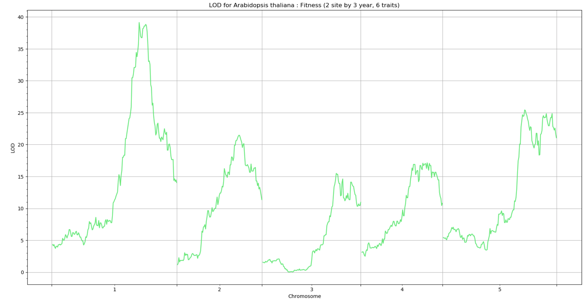

QTL analysis
This section describes a step-by-step instruction for QTL analysis.
Input data file format
The package FlxQTL does not require any particular data format. Any file readable in Julia is fine, but the input should contain traits (or phenotypes), genotypes (or genotype/allele probabilities), marker information on marker names, chromosomes, and marker positions. All inputs are types of Arrays (Float64), or Matrix{Float64}, in Julia and should have no missing values, i.e. imputation is required if missing values exist.
Reading data files and processing arrays
Use any Julia package able to read data files (.txt, .csv, etc.). We start with a plant dataset in FlxQTL: Arabidopsis thaliana in the data folder. Detailed description on the data can be referred to README in the folder.
using DelimitedFiles
pheno = readdlm("data/Arabidopsis_fitness.csv",',';skipstart=1); # skip to read the first row (column names) to obtain a matrix only
geno = readdlm("data/Arabidopsis_genotypes.csv",',';skipstart=1);
markerinfo = readdlm("data/Arabidopsis_markerinfo_1d.csv",',';skipstart=1);For efficient computation, the normalization of matrices is necessary. pheno is a real-valued matrix from 1.774 to 34.133, so that it is better to narow the range in [0,1], [-1,1], or any narrower interval for efficient computation. Note that the dimension of a phenotype matrix should be the number of traits (or phenotypes) x the number of individuals, i.e. m x n.
using Statistics, StatsBase
Y=convert(Array{Float64,2},pheno'); #convert from transposed one to a Float64 matrix
Ystd=(Y.-mean(Y,dims=2))./std(Y,dims=2); # sitewise normalization!!! Note
- If the data are skewed or have outliers, simple standadization may not correct them. You may use a
Y_huber()function to rescale the data to be less sensitve to skewness or outliers.
In the genotype data, 1, 2 indicate Italian, Swedish parents, respectively. You can rescale the genotypes for efficiency or interpretability.
geno[geno.==1.0].=0.0;geno[geno.==2.0].=1.0; # or can do geno[geno.==1.0].=-1.0 for only genome scanFor genome scan, we need restructure the standardized genotype matrix combined with marker information. Note that the genome scan in FlxQTL is implemented by CPU parallelization, so we need to add workers (or processes) before the scan starts. Depending on the computer CPU, one can add as many processes as possible. If your computer has 16 cores, then you can add 15 or little more. Note that you need to type @everywhere followed by using PackageName to dispatch the package availabe to all workers for parallel computing. The dimension of a genotype (probability) matrix should be the number of markers x the number of individuals, i.e. p x n.
using Distributed
addprocs(4)
@everywhere using FlxQTL
XX=Markers(markerinfo[:,1],markerinfo[:,2],markerinfo[:,3],geno') # marker names, chromosomes, marker positions, genotypesOptionally, one can generate a trait covariate matrix (Z). The first column indicates overall mean between the two regions, and the second implies site difference: -1 for Italy, and 1 for Sweden.
Z=hcat(ones(6),vcat(-ones(3),ones(3)))
m,q = size(Z) # check the dimensionComputing a genetic relatedness matrix (GRM)
The submodule GRM contains functions for computing kinship matrices, kinshipMan, kinship4way, kinshipLin, kinshipCtr, and computing a 3D array of kinship matrices for LOCO (Leave One Chromosome Out) with a shrinkage method for nonpositive definiteness, shrinkg, shrinkgLoco, kinshipLoco. Note that the shrinkage option is only used for kinshipMan, kinship4way.
For the Arabidopsis genotype data, we will use a genetic relatedness matrix using manhattan distance measure, kinshipMan with a shrinkage with the LOCO option.
Kg = shrinkgLoco(kinshipMan,10,XX) # a 3-d array For no LOCO option with shrinkage,
K = shrinkg(kinshipMan,10,XX.X) # a matrix1D genome scan
FlxQTL has added a new functionality for higher dimensional traits, operated by penalized log-likelihood function using Prior with df_prior for an error term, $\Sigma$, distributed by Inverse-Wishart distribution to remedy numerial stability. Users can choose a penalization option in the keyword argument, penalize =true when scan or permutation fails convergence in the default setting (no penalization). The default positive definite scale matrix is then a large scaled matrix (Prior = cov(Y,dims=2)*3). We recommend controlling degrees of freedom (df_prior), i.e. $m+1 (default) \le df\_prior < 2m$, or updating the null parameter estimates (H0_up = true) for numerical stability when analyzing higher dimenional traits with genotype probability data if any singularity error occurrs.
!!! Note
- The last resort of
df_prior = Int64(ceil(1.9m))could be applied unless any of adjustments would work. Any tolerance (itol,tol0,tol) of base algorithms may be adjusted, but this is not needed in most cases.
Once all input matrices are ready, we need to proceed the eigen-decomposition to a relatedness matrix: the sigular value decomposition is implemented.
Tg,λg = K2eig(Kg, true) # for eigen decomposition to one kinship with LOCOFor eigen decomposition to one kinship with no LOCO option,
T,λ = K2eig(K) # no LOCONow start with 1D genome scan with (or without) LOCO including Z or not. For the genome scan with LOCO including Z,
LODs,B,est0 = gene1Scan(1,Tg,Λg,Ystd,XXa,true;Z=Z); # FlxQTL for including Z (trait covariates)For the genome scan with LOCO without a particular form of Z, i.e. an identity matrix (default), we have two options: a FlxQTL model and a conventional MLMM (slower). Both have penalization options.
LODs,B,est0 = gene1Scan(1,Tg,Λg,Ystd,XX,true); # FlxQTL for Z=I
LODs,B,est0 = gene1Scan(1,Tg,Λg,Ystd,XX,true;penalize=true); # penalization option for Z=I
lods,b,Est0 = gene1Scan(Tg,Λg,Ystd,XX,1,true); # MLMMOr one can return $\log_{10}P$ instead of LOD scores using logP = true in the keyword argument for all the gene1Scan() functions.
lnP, B, est0 = gene1Scan(1,Tg,Λg,Ystd,XX,true;logP=true); Note that the argument cross::Int64 in gene1Scan indicates a type of genotype or genotype probability. For instance, if you use a genotype matrix whose entry is one of 0,1,or 2, type 1. If you use genotype probability matrices, depending on the number of alleles or genotypes in a marker, one can type the corresponding number. i.e. 4-way cross: 4, HS DO mouse: 8 for alleles, 32 for genotypes, etc.
For no LOCO option (default), the last positioal argument can be omitted for the default value.
LOD,B1,est00 = gene1Scan(1,T,λ,Ystd,XX;Z=Z);
LOD,B1,est00 = gene1Scan(1,T,λ,Ystd,XX); # Z=I
lod,b1,Est00 = gene1Scan(T,λ,Ystd,1,XX); # MLMMThe function gene1Scan() has three outputs: LOD scores (LODs), effects matrix under H1 (B), and parameter estimates under H0 (est0), which is an Array{Any,1}. If you want to see null parameter esitmate in chromosome 1 for LOCO option, for instance, type est0[1].B, est0[1].loglik, est0[1].Vc, est0[1].Σ, which is a struct of Result. When analyzing high-dimensional traits with genotype probability data, e.g. m = 36 with cross = 4 without no penalization, this may fail completing genome scan; it is recommended that setting H0_up=true and penalize=true, which updates the null variance component $V_C$ by $\tau^2$ under H0, i.e., $\Omega \approx \tau^2V_C$, followed by the addtional update $\tau^2$ for each marker. In particular, you can extract values from each matrix in B (3D array of matrices) to generate an effects plot. To print an effect size matrix for the third marker, type B[:,:,3], where the last dimension is the order of a marker in the genotype (probability) data.
Generating plots
The QTLplot module is currently unavailable but plotting functions will be replaced with BigRiverQTLPlots.jl soon.

Performing a permutation test
Since the statistical inference for FlxQTL relies on LOD scores, we have now added three kinds of permutation test functions to estimate thresholds for a type I error: mlmmTest(), permTest(), and permutationTest(). mlmmTest() implements permutation test with no LOCO for MLMM models with a penalization option, permTest() estimates null parameters without LOCO first, followed by scan with permuted data with LOCO and penalization, and the third function has options of both penalization and LOCO. permutationTest() can estimate null parameters from the actual data with LOCO, followed by LOCO scan with permuted data to obtain the distribution of maximum LOD scores when both options are on. Thus, both options may be much longer than the first two but may yield better estimation. Note that penalization is not neccessary for lower dimensional traits.
The first argument is nperm::Int64 to set the number of permutations for the test. For keyword arguments, pval=[0.05 0.01] is default to get thresholds of type I error rates (α), and the identity matrix, i.e. Z=diagm(ones(m)) is default.
maxLODs, H1par_perm, cutoff = permTest(1000,1,Kg,Ystd,XX;Z=Z,pval=[0.05]) # LOCO & penalization, cutoff at 5 %
maxlods, H1par_perm1, cutoff1 = mlmmTest(1000,1,K,Ystd,XX,true;pval=[0.05]) # no LOCO & penalization for MLMM
Maxlods, H1par_loco, cutoff2 = permutationTest(1000,1,Kg,Ystd,XX,true,true;Z=Z) # LOCO + penalization
2D genome scan
A gene2Scan() function has two options just as gene1Scan functions; LOCO and penalization for both FlxQTL and MLMM models. Note that one needs a much coarser genotype (probability) matrix than that for 1D scan since the distance between any two markers in a chromosome is very close each other, often yielding a numerical error during the operation. This gets worse when the conversional MLMM is chosen to implement. The provided data for 2D scan can be processed by the R/qtl library with a sim.geno function by picking one of the simulated data sets, where step=5 and draws=16 are set for this Arabidopsis data.
geno_2d = readdlm("data/Arabidopsis_genotypes_2d.csv",',';skipstart=1);
markerinfo_2d = readdlm("data/Arabidopsis_markerinfo_2d.csv",',';skipstart=1);
geno_2d[geno_2d.==1.0].=0.0;geno_2d[geno_2d.==2.0].=1.0; # or can do geno_2d[geno_2d.==1.0].=-1.0 for only genome scan
X2=Markers(markerinfo_2d[:,1],markerinfo_2d[:,2],markerinfo_2d[:,3],geno_2d) # marker names,
LOD_2d,B2,est02 = gene2Scan(1,Tg,Λg,Ystd,X2,true); # for Z=I included as default in keyword arguments
LOD2d,B02,est2 = gene2Scan(1,Tg,Λg,Ystd,X2,true;Z=Z,penalize=true) # for contrast Z & penalization option
lod_2d,b2,Est02 = gene2Scan(Tg,Λg,Ystd,X2,1,true) # MLMM
Or one can do with no LOCO as explained as in aforementioned 1D genome scan.